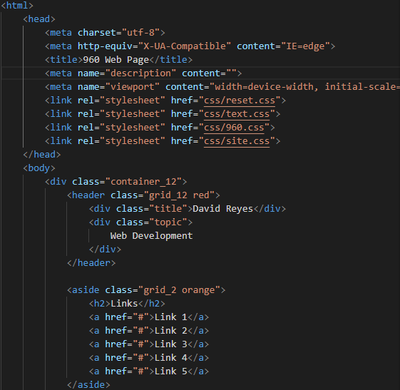
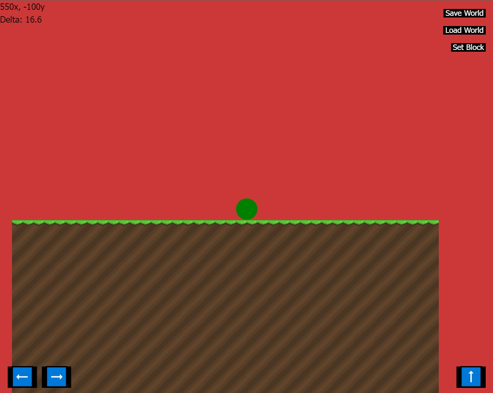

One of my favorite parts of programming is most definetely web development. Web dev allows programmers to be as creative or plain as they would like to be with their code or HTML. Althought web development is limited by a single thread on almost everyone's computer, there are still so many things that can be created in that single thread worker such as personal websites, blogs, social medias, and video games. One of my biggest web development projects is a 2d Building Game rendered with Javascript and HTML Canvas, running on a toolkit I have made for small web games. If it weren't for most of the accomplishments that started with web development, then the odds are that we most likely wouldn't have bigger platforms such as youtube, spotify, and facebook.
 